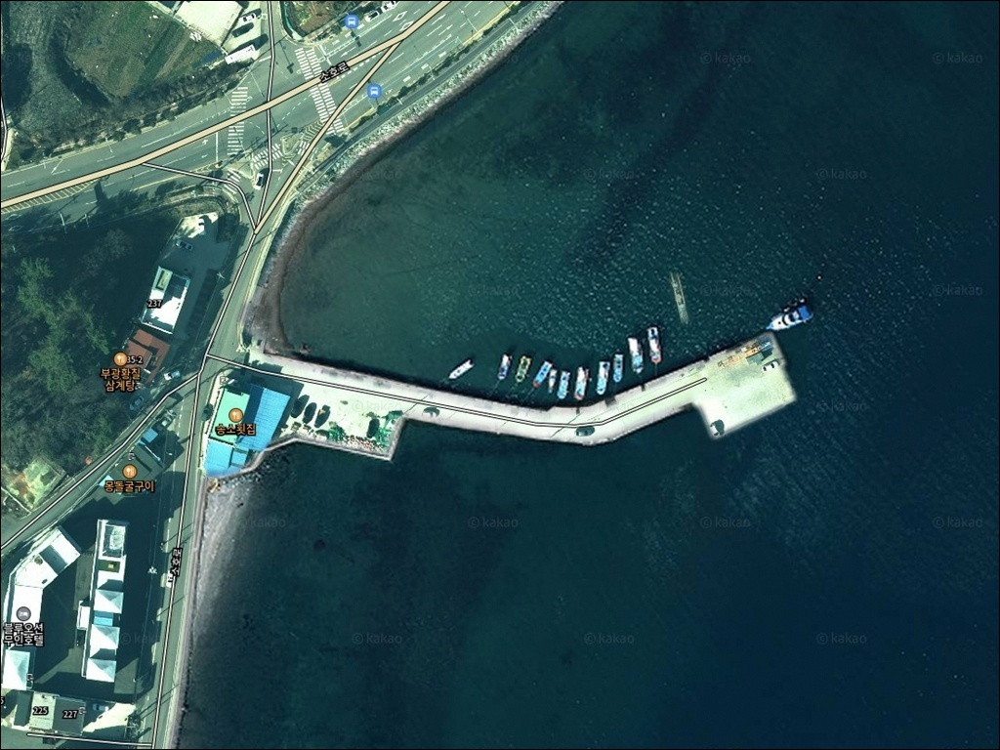
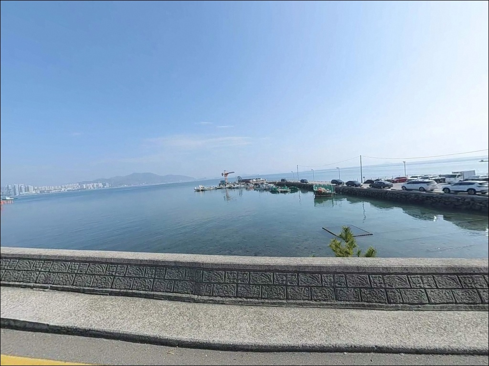
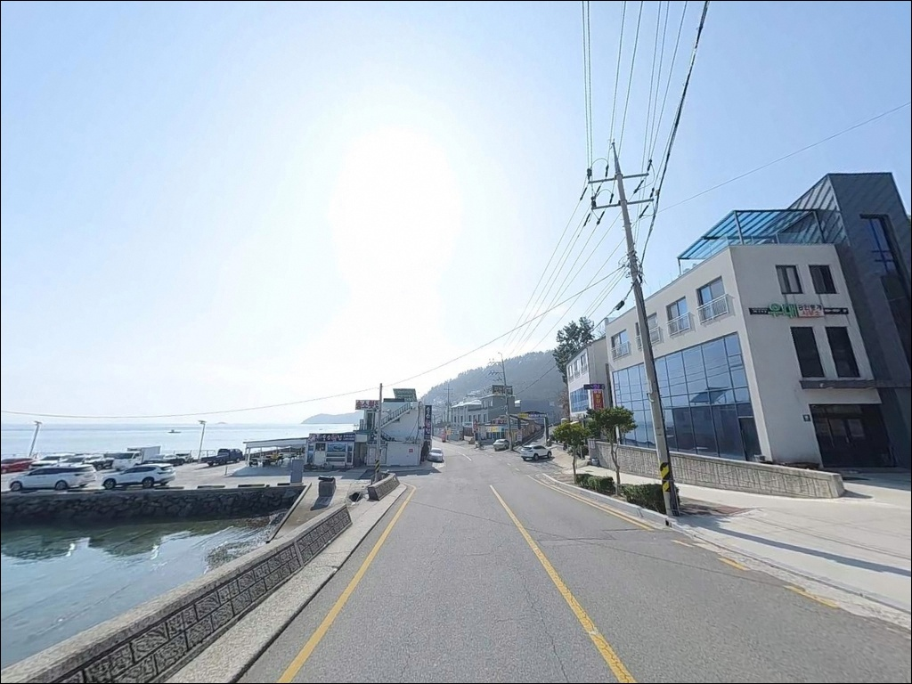
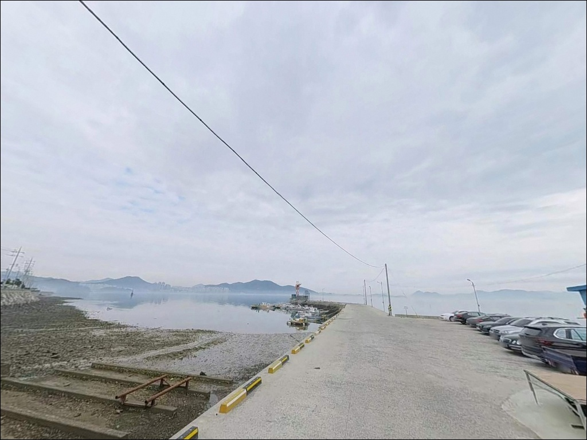
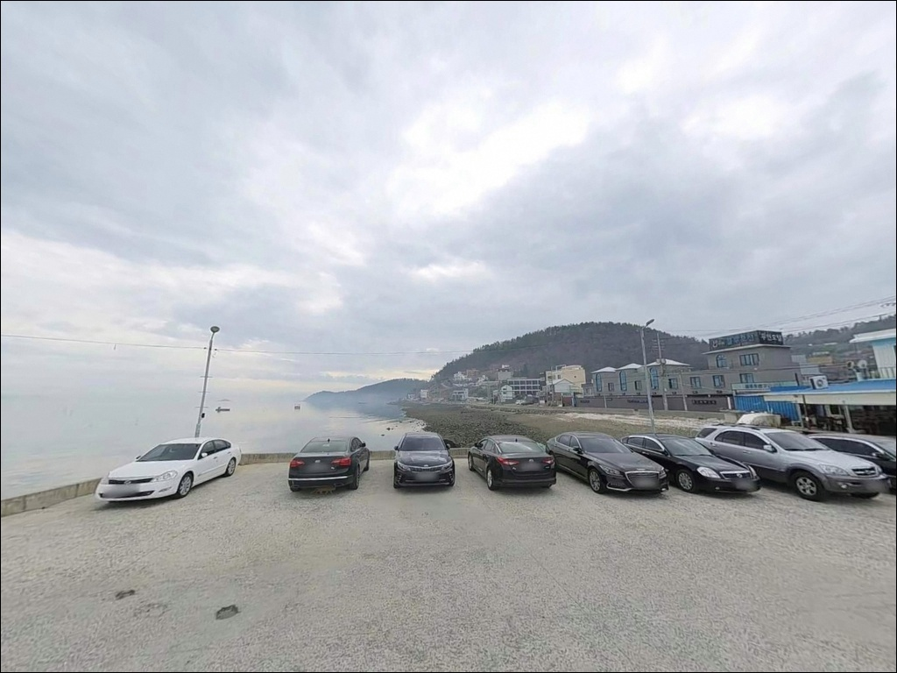
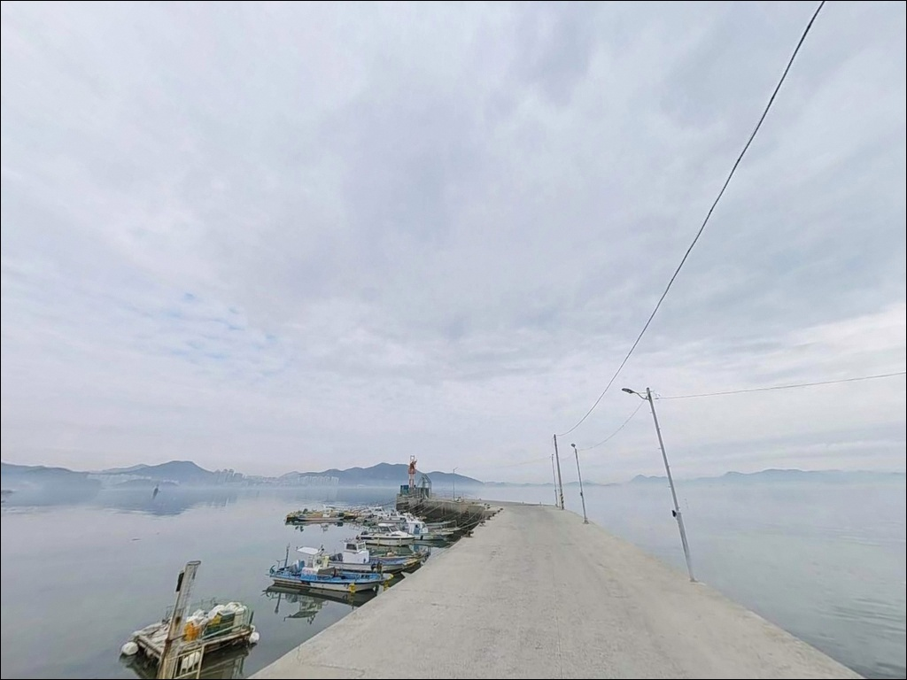
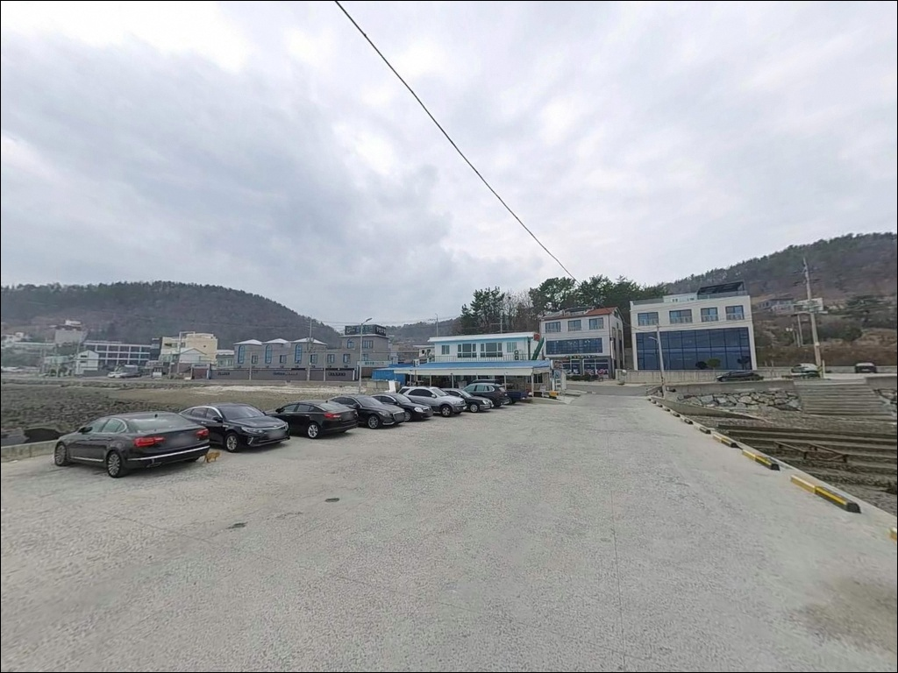
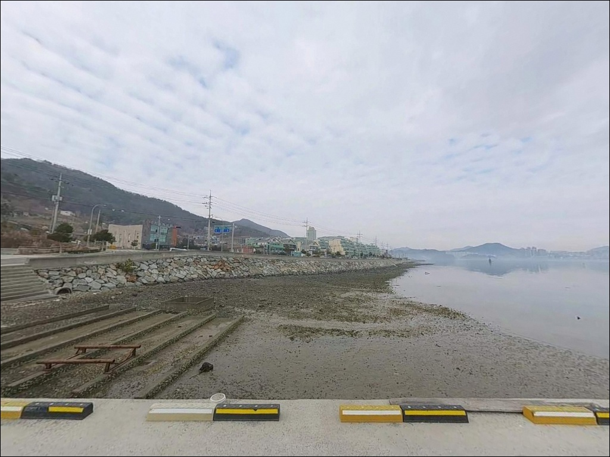
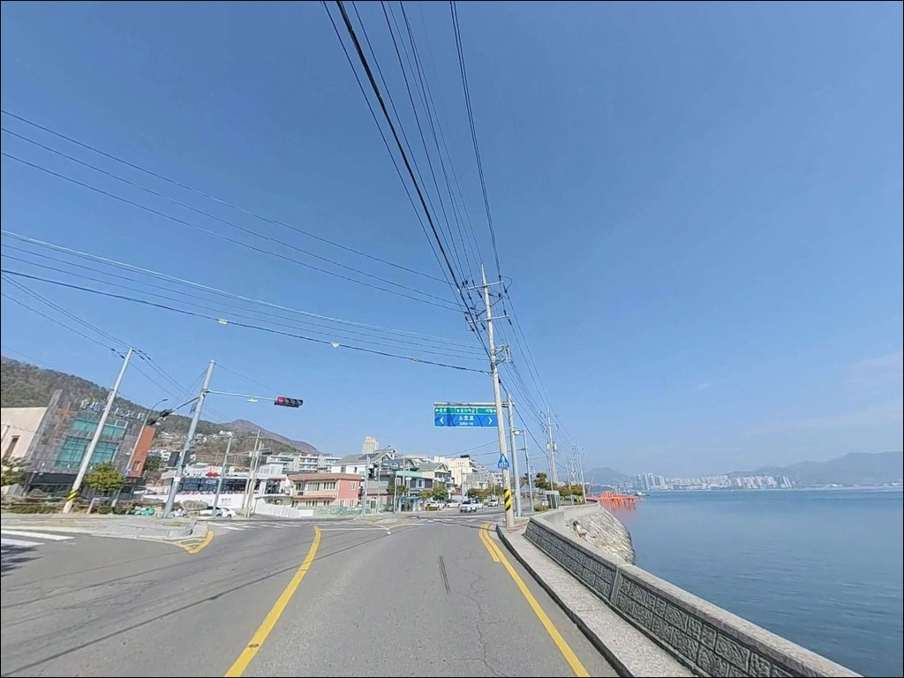

여수 송소항 방파제, 만조 전후 5m 수심 급변 구간에서 들어온 입질


포인트 안내
송소항
전남 여수시 소호동 1231-1
내만 항구라고 물때를 무시하면
방파제 끝단 수심 급변 구간에서
채비가 흘러버려 공략 자체가 흐트러집니다.
가막만 조류는 외해에 비해 완만하지만,
물때에 따라 수로 구간 흐름이 달라지기 때문에
입장 타이밍이 자리 선택의 기준이 되는 포인트입니다.
여수 소호동 가막만 안쪽에 자리한 송소항은
선착장과 방파제 역할을 겸하는 소형 어항입니다.
소호로 해안도로에서 바로 내려가는 구조라
차에서 내리자마자 낚시 자리에 붙을 수 있는
도심 밀착형 방파제 포인트입니다.
이 글은 송소항의 진입 동선, 낚시 지형 분석,
낚시 스타일별 공략 조건, 차박 여건에 집중합니다.
특정 어종 조황 단정이나 시설 확정 정보는
이 글의 범위에 포함되지 않습니다.

1. 진입 동선과 차량 접근 여건
소호동 해안도로인 소호로는 왕복 2차선 포장도로로,
아파트 단지와 횟집가가 이어지는 구간입니다.
송소항 진입로는 이 도로에서 직접 연결되며,
항 내부까지 포장도로 전 구간이 이어지는
구조입니다.
항 내 물량장 부지 폭이 확보되어 있어
대형 차량의 회차도 가능한 편입니다.
주차는 방파제 시작 지점 공터,
선착장 벽면을 따라 주차하는 방식이 일반적입니다.
소호로 해안도로변 노상 공간도
단기 주차 후보로 활용됩니다.
항 내부는 어선 계류 시설이 운영되는 기능성 어항이라
선박 작업 동선을 막지 않는 자리를
먼저 파악하고 주차하는 편이 좋습니다.

2. 차박 환경과 야간 체류 여건
송소항 일대는 소호동 도심과 인접한 생활권 해안이라
야간에도 가로등이 밝게 유지되는 환경입니다.
선착장 진입로와 방파제 구간에
가로등이 설치되어 있어
야간 시야 확보에 어려움은 없습니다.
민가와 상업시설이 인접한 구간이라
완전한 정적 환경을 기대하기는 어렵습니다.
차량 통행과 식당 소음이 일정 수준 존재하며,
주간보다 야간이 상대적으로 조용해집니다.
차박 숙영 목적이라면
항 내 선박 작업 동선과 떨어진 자리를
먼저 확인하고 정차하는 편이 안전합니다.
인근 소호요트마리나 공영주차장(150면, 2시간 무료)은
약 1km 거리에 있어,
항 내 주차 여건이 여의치 않을 경우
대안 주차지로 활용할 수 있습니다.


3. 주변 편의시설 및 인프라 현황
송소항 인근 해안도로 구간에는
횟집과 식당이 다수 분포합니다.
GS25 소호한화점(소호동 1199-7, 24시간 영업)이
차량으로 이동 가능한 거리에 있어
먹거리와 소모품 보충이 어렵지 않습니다.
낚시 용품은 송소항 인근에
여수바다낚시(소호동 1215번지)가
위치하고 있어 현장 소품 구매가 가능합니다.
화장실은 인근 송소횟집 내
여수시 개방형 화장실이 확인되어 있습니다.
반경 10km 이내에 여수 시내권이 연결되어
대형 마트, 주유소, 병원 등
모든 생활 인프라 접근이 가능합니다.
응급 상황 시 여천전남병원(무선로 95)이
24시간 운영되고 있습니다.

4. 외항 끝단 조류가 달라지는 타이밍부터 확인한다
송소항은 내만 가막만 해역에 위치해
외해 파도의 직접 영향을 받지 않는 편이지만,
물때에 따라 항 입구 수로 구간 조류가 달라집니다.
바다타임에서 소호동 기준 물때를 확인하고
방파제 끝단 공략 타이밍을 미리 잡는 것이
기본 준비입니다.
가막만 구역이라도 기상 변화에 따라
방파제 끝단 파도가 위험 수준에 달할 수 있습니다.
출조 당일 아침 기상청 예보와
풍속·풍향을 재확인하는 편이 좋습니다.
바닥 지형이 펄과 사질 혼합이라
원투낚시 시 밑걸림은 상대적으로 적은 편이지만,
수중 암초 구간에서 채비 손실을 대비한
여분 채비는 챙겨두는 것이 기본입니다.
어선 출입이 활발한 기능성 어항이므로
어선 이동 시 낚싯줄을 회수하고
선박 작업 동선을 비워두는 것이 기본 매너입니다.
야간 낚시 시에는 헤드랜턴과 구명조끼를
반드시 갖추어야 합니다.

5. 지형 기반 낚시 여건 분석
송소항은 가막만 안쪽 해안선에 붙은 소형 어항으로,
선착장과 방파제가 결합된 구조입니다.
방파제 외측은 개방 수면에 면하고,
내측은 선박 계류 공간으로 활용됩니다.
내항 성격이 강해 파도 영향이 적고
수심은 완만하게 깊어지는 편입니다.
방파제 끝단 기준 만조 시 수심은
5~7m 내외로 형성됩니다.
끝단으로 갈수록 수심이 급변하는 구간이 나타나며,
이 구간이 루어와 찌낚시의 핵심 탐색 지점이 됩니다.
항 입구 수로라인을 중심으로 채비를 던지는 방식이
이 포인트에서 기본이 됩니다.
바닥은 펄과 사질이 섞인 구조이며
군데군데 수중여가 발달해 있습니다.
수중여 주변은 볼락 등 암초성 어종의
서식 여건을 갖추고 있으며,
내만 해역 특성상 계절에 따라
회유성 어종의 접점이 형성됩니다.
최신 조황은 가기 전에
"송소항 낚시", "소호동 방파제 조황" 키워드로
반드시 검색해 보시기 바랍니다.
방파제 외항 끝단은 조류 변화가 뚜렷해
루어 반응이 살아나는 자리입니다.

6. 포인트에 어울리는 낚시 스타일
이 포인트에서 가장 범용적으로 운용할 수 있는 낚시는
원투낚시입니다.
펄과 사질 혼합 바닥에서 밑걸림이 적어
초보자도 운용이 수월하며,
내만 쪽으로 채비를 투척해
바닥층 어종을 노리는 방식이 기본 전략입니다.
볼락 야간 루어낚시도 이 포인트와 잘 맞습니다.
항구 가로등이 수면에 불빛을 만들어내는 구간에서
밝음과 어둠의 경계면을 탐색하는 방식이 유효합니다.
지그헤드에 소프트웜 채비를 달아
방파제 주변 구조물과 석축 경계를 천천히 탐색하면
볼락 반응이 나타나는 편입니다.
찌낚시는 방파제 외측 석축 경계면과
수로 경계부를 따라 운용하는 방식이 어울립니다.
만조 전후로 조류가 적당히 흐를 때
찌를 흘려주는 방식이 효율적입니다.
에깅 시즌에는 방파제 외측에서
갑오징어·주꾸미 공략도 가능하며,
가을철이 이 포인트의 에깅 주력 시기가 됩니다.

7. 대안 포인트와 플랜 B 동선
송소항 자리 여건이 여의치 않거나
조류 조건이 맞지 않을 때 가장 먼저 이동할 곳은
소호항 방파제입니다.
약 1~2km 거리의 동일 소호동 해안선에 위치하며,
내만 조건은 유사하나 방파제 규모가 크고
선상낚시 출조점이 있어 조황 정보 접근이 쉽습니다.
같은 소호동 내에 소제항도 있습니다.
비슷한 내만·방파제 환경을 제공하는 포인트로,
송소항과 함께 가막만 생활낚시 동선으로
엮어서 이동하기 좋습니다.
더 다양한 낚시 여건을 원한다면
국동항(약 6km)이 유효한 대안입니다.
방파제 구조가 명확하고 낚시 정보가 풍부하며,
인근 낚시 용품점과 식당까지 갖춰져 있어
송소항 방문과 당일 동선으로 묶어
활용하기 좋은 포인트입니다.

도심에서 가장 빠르게
바다 방파제에 닿는 방법
원투낚시나 볼락 라이트게임을 즐기는 낚시인이라면
송소항의 여건은 무리 없이 맞는 편입니다.
소호로에서 바로 연결되는 접근성,
반경 3km 이내에 갖춰진 편의 인프라,
야간에도 조명이 확보되는 환경은
단독 출조나 당일 낚시 여행에 부담이 적습니다.
다만 항 내 어선 작업 공간과 가까운 만큼
선박 동선을 항상 비워두어야 하고,
물때 확인 없이 방파제 끝단에 진입하면
조류 상황에 따라 채비 운용이 어려워집니다.
물때 확인, 어선 동선 배려, 야간 조명 준비,
이 세 가지만 갖추면
여수 도심에서 가장 빠르게 방파제 낚시를
즐길 수 있는 출조가 됩니다.
낚시를 마치고 차 안에서 조용히 쉬고 싶은 날이라면,
가막만 야경과 함께 하룻밤 머물기에
나쁘지 않은 선택이 됩니다.